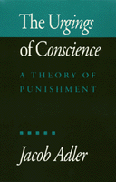

To what extent does a guilty person have a duty to submit to punishment?
To what extent does a guilty person have a duty to submit to punishment?


 To what extent does a guilty person have a duty to submit to punishment?
To what extent does a guilty person have a duty to submit to punishment?

|  |
The Urgings of ConscienceA Theory of PunishmentJacob Adlercloth EAN: 978-0-87722-826-4 (ISBN: 0-87722-826-4) |
"This is a well written and clearly argued book. Adler's rectificatory theory of punishment breaks new ground and presents a convincing case for penalties of community service. Philosophers interested in Rawls' theory of justice will find his attempt to locate a place for punishment within Rawls' theory interesting."
—Richard W. Burgh, Professor of Philosophy, Rider College
While most philosophers who write about punishment ask, "Why may we punish the guilty?" Jacob Adler asks, "To what extent does a guilty person have a duty to submit to punishment?" He maintains that if we are to justify any system of punishment by the state, we must explain why persons guilty of an offense are morally bound to submit to punitive treatment, or to undertake it on their own. Using Rawls's theory of social contract as a framework, the author presents what he calls the rectification theory of punishment.
After examining punishment from two points of view—that of the punisher and that of the offender who is to be punished—Adler proposes the Paradigm of the Conscientious Punishee: a repentant wrongdoer who views punishment as not necessarily unpleasant, but as something it is morally incumbent upon one to undertake. The author argues that this paradigm must play a central role in the theory of punishment. Citing community service projects and penances for sin (as required by some religions), Adler argues that punishment need not involve pain or any other disvalue. Instead he defines it in terms of its justificatiory connection with wrongdoing: punishment is that which is justified by the prior commission of an offense and generally not justified without the prior commission of an offense.
The rectification theory applies particularly to offenses involving basic liberties. It is based on the assumption that each person is guaranteed the right to an inviolable sphere of liberty. Someone who commits an offense has expanded his or her sphere by arrogating excess liberties. In order to maintain the equality on which this theory rests, an equivalent body of liberties must be given up. In discussing applications of the theory, Adler demonstrates that active service (as punishment) is more effective in safeguarding important rights and interests and maintaining the social contract than is afflictive punishment.
Excerpt available at www.temple.edu/tempress
"Attempted offenses and victimless offenses have long presented difficult and related problems for moral, legal, and religious theory. The problems are these: why should an unsuccessful attempt, or a victimless crime, call down any punishment at all upon the perpetrator? No one, after all, was harmed. And if an attempt is to be punished at all, why should it be punished less severely than the successful commission of the offense? The rectification theory allows us to answer these questions.
"There are two possible approaches to this question. First, one might argue that so-called victimless offenses (with which I include attempts) actually involve an obscure and overlooked victim. For example, an attempted crime creates fear in the general public, and thus all are victims, though there is no direct victim. The second approach bites the bullet and admits that punishment is justified even in the total absence of a victim. Each approach entails its own typical problems. If we want to find a victim for every offense, we can certainly find one if we try hard enough; but this victim is often so strained and metaphysical that we blush to pronounce the word victim in this connection. On the other hand, if we propose to punish victimless offenders, we risk advocating punishment for mere bad character, apart from any concrete wrong."
From Chapter 6: "The Rectification Theory: Application and Evaluation"
Acknowledgments
Introduction
Part I: A Metatheory of Punishment
1. Why Submit to Punishment?
How to Justify Punishment •
Submission to Punishment: A Brief History •
The Need to Address the Question of Submission •
Civil Disobedience
2. Two Paradigms of Punishment
The Two Paradigms •
The Status of the Two Paradigms •
The Priority of the Conscientious Paradigm •
Submission to Punishment and the Traditional Theories •
Nontraditional Theories
3. It Doesn't Have to Hurt: Punishment, Suffering, and Other Evils
The History of the Standard View •
Refutation of the Standard View: The Main Grounds •
Additional Counterexamples •
The Psychology of Positive Punishment •
Disvalue and the Justification of Punishment •
Concessions to the Standard View
4. What is Punishment?
A Definition •
Applications •
Definition and Justification
Part II: A Theory of Punishment
5. The Rectification Theory of Punishment
Equal Basic Rights •
The Kernel of the Theory •
How to Broaden Your Sphere •
The Extent of the Broadening •
Determining the Sentence •
An Objection: Future or Past Rights? •
Suffering Not Essential •
A True Claim of Rights •
Interpretation of the Punishment •
How to Restrict Your Own Liberty •
Remission of Punishment •
Affinities to Other Views
6. The Rectification Theory: Application and Evaluation
The Domain of the Principle •
Attempts and Victimless Offenses •
Punishment of Recidivists •
Community Service •
Imprisonment •
Penance for Sins •
Evaluation
7. Punishment and Contract
Overview •
Methodology for Nonideal Theory •
Making the Contract •
The Content of the Contract •
Principles of Interpretation •
Applicability of the Contract, Division of Offenses •
Applying the Contract •
Transfer to the Real World •
Hamlet without the Prince
7. Punishment, Contract, and Fraternity
An Objection •
The Social Contract as Relational Contract •
The Fraternal Society •
The Questions Answered
Appendix
Notes
Index
 | Jacob Adler is Associate Professor of Philosophy at the University of Arkansas. |
© 2015 Temple University. All Rights Reserved. This page: http://www.temple.edu/tempress/titles/adler_reg.html.